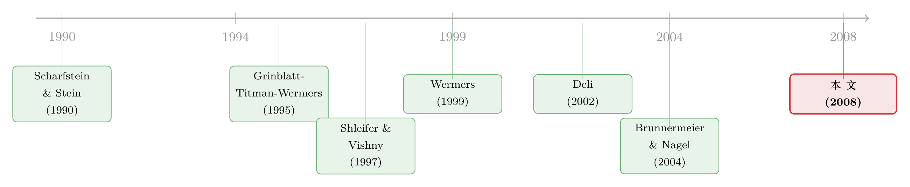

高薪不是火上浇油，反而是泡沫里的灭火器
本文读的是 Dass, Massa & Patgiri (2008, Review of Financial Studies)：在 1990 年代末那场科技泡沫里，那些把更多激励写进顾问契约的基金，反而更少持有「泡沫股」。一个看似违反常识的发现——给基金经理更高的激励，不是诱使他们追涨杀跌、火上浇油，而是把他们从羊群里拽了出来。激励每提高 1 个百分点，标准化的泡沫股权重就下降近 3%。
1 一个让人不舒服的猜想
先说一个几乎是「常识」的故事。
1990 年代末，纳斯达克一路狂奔，估值高得离谱，所有人都知道这是泡沫，可所有人还在买。为什么？金融学给过一个相当聪明、也相当悲观的解释：因为骑泡沫（riding the bubble）才是理性的。
这套逻辑来自「套利的极限（limits of arbitrage）」。Shleifer and Vishny (1997) 说得很清楚：如果一个基金经理因为代理问题被迫只能看短期业绩，那么即便他心里清楚股价高得荒唐、迟早要崩，他也不能去做空、不能离场。因为短期的相对落后会让投资者赎回、让资金流出，等真到了泡沫破灭那天，他手里早就没有筹码了。于是，明知是泡沫，也要跟着吹。Brunnermeier and Nagel (2004) 给这套故事补上了硬证据——对冲基金确实在骑科技泡沫。
顺着这条线往下推，一个让人很不舒服的猜想就冒出来了：既然激励让经理盯着业绩，那激励越高，是不是越会逼他去追逐泡沫股、把泡沫吹得更大？ 如果真是这样，那么近二十年来关于「高管激励」的整套主流叙事——业绩薪酬好、对齐股东利益——在泡沫面前就变成了帮凶。这正是 Dass, Massa and Patgiri（下称 DMP）这篇文章一开始要面对的张力。
而他们的回答，恰恰是反过来的。
2 把「羊群」和「激励」放进同一架天平
要理解这个反转，得先回到一个更老的问题：基金经理为什么会羊群（herd）？
接着，一个自然的问题是：羊群从哪来。答案是声誉（reputation）。Scharfstein and Stein (1990) 与 Zwiebel (1995) 给出的模型直觉是：在一个信息不对称的劳动力市场里，经理对自己的能力没把握、又在乎名声，于是最安全的做法是「跟大家一起做决定」。Scharfstein-Stein 有一句话被 DMP 反复引用：
如果一个错误的决定是大家一起犯的，那它对声誉的伤害就没那么大——大家可以一起分摊「运气不好」的锅。
换句话说，羊群是一种声誉保险。而基金行业里这种倾向被放大了，因为投资者恰恰是按经理的声誉和过往业绩来挑基金的。羊群证据也是一抓一大把（Grinblatt, Titman and Wermers, 1995；Wermers, 1999）。
然后，DMP 把 Scharfstein-Stein 模型里另一句常被忽略的话翻了出来：
只在乎声誉的经理永远会羊群……但在乎利润（薪酬）的经理，必须在「损失声誉」和「赚到利润」之间做权衡……随着利润的权重上升，羊群行为存在的参数区间就会收缩。
这句话才是整篇文章的支点。声誉把经理推向羊群，激励则把他往外拽。两股力量放在同一架天平上：哪头更重，决定了经理是随大流还是当逆向者。而且在基金业里，激励这一头还被「流量—业绩」的非线性关系进一步加杠杆——赢家拿到的资金流入是不成比例地多（Chevalier and Ellison, 1997），既然薪酬又挂在管理规模上，激励的分量就被成倍放大了。
3 真正关键的一步：把「骑泡沫」翻译成「羊群」
但真正关键的一步，在于 DMP 做的一个概念上的「翻译」。
泡沫期里，持有泡沫股，本质上就是羊群——因为你买的，正是市场上所有人都在买的那些股票。如果你的目标是「别垫底」，那么骑泡沫就是最安全的策略：跟着大家一起涨，就算崩了也是法不责众。
那什么是有风险的策略？离开这群人。 这是唯一能让你冲到榜首的路。而且泡沫越接近顶点、破灭的概率越大，这种「背离」带来的回报就越可能兑现。
于是逻辑链条接上了：既然「持有泡沫股 = 羊群」，那么前面那套「激励抑制羊群」的机制，在泡沫期就有了一个极其具体的预言——
激励越高的基金，越少持有泡沫股。
这就是 DMP 的第一个假设。注意它和开头那个「常识猜想」正好相反。常识说激励让人追泡沫；DMP 说激励让人逃离泡沫。区别就在于：高激励的经理，给「泡沫破灭那一刻」的赔付赋予了更大的权重——即便他对破灭概率的判断和市场上其他人一模一样，他也会主动选一个「在破灭时赔付更高」的策略。代价是，泡沫还没破的时候，他大概率要承受一段难看的业绩。
（关于「怕落后」如何反过来把理性人推向泡沫，可参见《怕的不是亏钱，是「跟大家一起穷」——理性人如何亲手吹起一个泡沫》，那是从相对财富偏好的角度讲同一种张力。）
4 两个可检验的命题
DMP 把直觉写成了两条干净的回归形式。第一条刻画激励与泡沫股持仓的关系：
$$ B = \alpha + \beta C + \gamma X $$
这里 \(B\) 是基金持有的泡沫股占比（用这些泡沫股在纳斯达克里的权重做标准化），\(C\) 是顾问契约里的激励结构，\(X\) 是一组基金特征控制变量。预言是：泡沫期里 \(\beta < 0\)——激励越高，泡沫股持仓越低。
第二条把持仓差异接到业绩差异上。这是整篇文章最反直觉、也最漂亮的一个方程，值得拆开来看：
其中 \(B_H, B_L\) 分别是一只低激励基金和与它匹配的高激励基金的泡沫股权重，\(R_H, R_L\) 是两者的业绩。预言是：泡沫期 \(\beta > 0\)，泡沫破灭后 \(\beta < 0\)。
把符号代进去体会一下：高激励基金的泡沫股持仓更低（\(B_H - B_L < 0\)），乘上泡沫期的正 \(\beta\)，得到的就是泡沫期里高激励基金跑输；而泡沫破灭后 \(\beta\) 翻负，同一个负的持仓差乘上负系数，结果变正——高激励基金跑赢。同一套持仓选择，在泡沫破灭的前后，命运彻底掉了个个儿。这正是「不骑泡沫」这个策略的事后写照：泡沫里它是拖累，泡沫破了它就成了护城河。
5 识别：怎么量「激励」，怎么定义「泡沫股」
光有故事不够，DMP 要面对两个实打实的测量问题。
怎么量激励？ 他们用的是顾问契约里写明的薪酬结构，数据来自美国证监会 EDGAR 数据库里的 NSAR-B 年度申报表。这套做法承袭了一整条文献——Coles, Suay and Woodbury (2000)、Deli (2002)、Deli and Varma (2002) 等——核心假设是：契约里有越大比例的业绩归属于顾问公司，经理拿到的实际激励就越高。一个很方便的特征是，顾问契约极少变动（Kuhnen, 2004；Warner and Wu, 2004），所以当某些年份匹配不上时，他们用前后年份的契约结构做插值，这也意味着激励变量基本是「事先给定」的，不太会被泡沫期的当期业绩反向污染。他们还额外控制了费率、平均账户规模、最低投资门槛，以及是否有显式的业绩费——后者其实很罕见，只有约 0.52% 的基金有业绩挂钩的薪酬成分，0.75% 的基金薪酬直接和对手业绩挂钩。
这里有个容易被忽略的细节：DMP 用的薪酬度量剔除了销售、营销和管理费用（即 12b-1 之类）。这很重要——否则你测到的「激励」可能只是基金在好年景里加大了销售投入，而不是真正付给「创造收益的人」的钱。
怎么定义泡沫股？ 他们用了三个基于基本面的定义：市销率（price-to-sales，仿照 Brunnermeier-Nagel）、市净率（market-to-book）和市盈率（price-to-earnings）。把纳斯达克所有股票按其中一个指标排序，最高的那个五分位就定义为泡沫股。作为稳健性的另一条路，他们干脆抛开基本面，直接按「这只股票被基金羊群的程度」排序，最高五分位定义为泡沫股——既然他们的核心论点就是「持有泡沫股 = 羊群」，那用观测到的羊群程度直接来定义，是一个很自洽的交叉验证。
样本与时间窗。 数据综合了多个来源：契约来自 NSAR、业绩来自 CRSP 共同基金月度库、持仓来自 CDA/Spectrum、股价来自 CRSP、会计数据来自 CRSP/Compustat。只保留主要投资权益的基金，剔除指数基金和封闭式基金。时间上分成两段：泡沫期 1997–1999 和 泡沫破灭后 2001–2003，中间的 2000 年是分水岭——纳斯达克在 2000 年 3 月触顶，这就是他们认定的「泡沫破灭点」。汇总后样本约 3,852 个基金-年观测。
6 反转：数字说了什么
于是反转出现。
持仓上，结果和第一假设一致：激励越高，泡沫股持仓越低。量级是——激励每提高 1 个百分点，标准化的泡沫股组合权重下降近 3%。无论用基本面定义还是用羊群程度定义，方向都一样、都强。
业绩上，那个「掉个个儿」的预言也兑现了。把低激励基金和与它特征相似的高激励基金匹配起来对比：泡沫破灭之前，高激励基金因为泡沫股权重更小，业绩相对更差；泡沫破灭之后，同样的低权重却带来了相对更好的业绩。DMP 给的量级很具体：如果一只高激励基金的标准化泡沫股持仓比匹配的低激励基金低 10%，那么在泡沫期里，这意味着每季度 2% 的业绩损失；而在泡沫破灭后，这转化为每季度 2.7% 的业绩收益（均为高激励相对低激励基金而言）。
一个策略，两副面孔。这恰恰说明高激励基金不是「运气好猜中了顶」——他们和市场对破灭概率的判断没有不同，只是因为激励让他们更看重「破灭时的赔付」，于是主动选了一个事前看着吃亏、事后可能翻盘的仓位。当然，这也可能带来事后的亏损——如果泡沫迟迟不破，那段难看的业绩就是真金白银的代价。
7 文献脉络
把这篇文章放回它生长的土壤里看，会更清楚它的位置。
最早的一支是泡沫本身的文献，关注的是泡沫在什么宏观（Flood and Garber, 1994）或微观（Abreu and Brunnermeier, 2003）条件下产生。但这支理论几乎没考虑过「委托资产管理这个行业」在催生或加剧泡沫里扮演了什么角色。
第二支是声誉与职业关切。Scharfstein and Stein (1990)、Zwiebel (1995) 把「经理为保住声誉而与同行羊群」写成了模型——这是 DMP 整套机制的理论底座。
第三支是机构投资者的羊群实证。Grinblatt, Titman and Wermers (1995) 与 Wermers (1999) 记录了基金的羊群，Lakonishok, Shleifer and Vishny (1992) 记录了养老金的羊群。
第四支是顾问契约文献。Deli (2002) 区分了基金业里盛行的线性契约与凹契约；Kuhnen (2004)、Warner and Wu (2004) 研究契约的变动；Almazan et al. (2004) 研究对经理的交易限制。DMP 正是站在这一支的肩膀上，把「契约激励」当作可观测的代理变量。

DMP 的贡献，是把这四条线在「泡沫」这个具体事件上拧成了一股：声誉催生羊群，激励抑制羊群，而泡沫期里「羊群 = 持有泡沫股」，于是契约激励第一次有了一个清晰的、可检验的、关于泡沫的预言。更重要的是它的规范含义——在那场关于高管薪酬「妖魔化激励」的辩论里，DMP 提供了一个反例：激励在这里不是在破坏市场，而是在稳定市场。
（这场泡沫本身有多难定义、多难处理，可参见《泡沫：一个我们至今定义不清、却又绕不开的词》；而泡沫年代另一群人——分析师——的行为证据，可参见《上市之后，分析师的「彩虹屁」到底值不值钱？》。）
8 评论与延伸（Q&A + 研究方向）
(a) 几个可能的疑问
Q：这和 Brunnermeier-Nagel「对冲基金骑泡沫」不是矛盾吗？
不矛盾，而是互补。Brunnermeier-Nagel 讲的是「在限制套利下，骑泡沫可以是理性的」；DMP 讲的是「在激励足够高时，背离羊群同样可以是理性的」。两者都在「理性 + 代理」的框架里，只是落点不同——前者强调资金流约束逼人留下，后者强调激励赔付诱人离场。可以说 DMP 补上了「谁会、以及为什么会不骑泡沫」这半边。
Q：β < 0 会不会只是「成长型基金天然买成长股」的伪相关？
这是最该担心的内生性。DMP 的应对是对持仓做了标准化——用泡沫股在纳斯达克里的权重、或用同类基金里中位数基金的权重去标准化，正是为了剔掉「成长风格基金本来就该多买成长股」这种自然倾向。是否完全干净见仁见智，但这一步至少把最显眼的混淆因素压下去了。
Q：用「契约里的薪酬条款」代理「经理实际激励」，靠谱吗？
这是整条文献的共同假设，也是它共同的软肋。DMP 的辩护有两点：一是契约极少变动，所以激励近乎外生、不会被当期业绩反向决定；二是他们剔除了销售/营销/管理费用，让度量更贴近「付给创造收益者」的那部分。但归根结底，经理实际拿到手的钱，未必和契约条款完全成比例。
Q：为什么 2000 年 3 月是泡沫破灭点，而不是别的时间？
因为纳斯达克的峰值就在 2000 年 3 月。DMP 把 1997–1999 划为泡沫期、2001–2003 划为破灭后，特意空出 2000 这个枢纽年。好处是两段窗口干净不重叠；代价是结果可能对「破灭点怎么定」有一定敏感性——这是事件研究里常见的取舍。
Q：高激励基金跑赢，会不会只是「能力强」而非「激励驱动」？
DMP 的设计正是为了切开这两者：他们做的是「业绩差异 ← 持仓差异」的回归（方程 2），而且把高、低激励基金按特征匹配。如果只是能力，就不该出现「泡沫期跑输、破灭后跑赢」这种随事件翻转的符号——能力强的人不至于在泡沫期系统性地差。符号的翻转，恰恰指向「持仓选择」这个渠道，而非纯能力。
Q：这对今天的政策有什么含义？
最直接的含义是：把基金顾问契约里的「高激励」一概当作损害投资者利益的「病态」结构，可能看漏了它的一面——稳定市场的正外部性。当然这不等于说激励越高越好，只是说在评估激励结构时，除了「代理成本」那本账，还有一本「市场稳定」的账没算进去。
(b) 几个可能的研究问题与提案
1. 把这套机制搬到公司债基金上。 【经济故事】信用市场也有自己的「泡沫」——比如利差被压到极致、人人追逐高收益债的阶段。如果契约激励能让股票基金背离泡沫，那它能否让债券基金在信用利差过窄时主动减持高风险债？机制应该类似，但债券基金的「羊群 = 火线甩卖」风险更现实。 【可行性】中。NSAR 契约数据对债券基金同样可得，持仓可用 eMAXX 或基金 N-PORT 申报。难点是「信用泡沫期」不像股票泡沫那样有个干净的破灭点，识别窗口更难界定。（相关的火线甩卖证据可参见《同一个发行人的两只债券，戳破了「火线甩卖」的幻觉》。）
2. 激励—羊群机制在外资持有人身上是否成立？ 【经济故事】外资基金往往面临更强的「跟随本地基准」压力（声誉/职业关切更重），这会强化羊群。那么对外资基金而言，激励抑制羊群的边际效果是更大还是更小？这能把 DMP 的机制和「外资是否稳定市场」的争论接起来。 【可行性】中。需要跨国的基金契约与持仓数据，激励度量在非美市场难以标准化（NSAR 是美国独有的）。识别上可以利用「可投资度（investability）」放开这类自然实验。
3. 流动性维度：高激励基金背离泡沫，是否也意味着它持仓更不流动？ 【经济故事】「老经济」股票相对泡沫股可能流动性更差。如果高激励基金系统性地偏离热门股，它在赎回冲击下的脆弱性会不会反而更高？这把「激励—羊群」和「基金流动性—脆弱性」两条线接起来。 【可行性】高。持仓、流动性度量（Amihud、价差）都现成，CRSP/CDA 可直接做。识别上可用赎回冲击或宏观波动事件做横截面比较。（相关脆弱性证据可参见《基金越难脱手，它手里的债券越「抖」》。）
4. 用机器学习重新定义「泡沫股」与「羊群」。 【经济故事】DMP 的泡沫股是按单一估值比率的五分位切出来的，比较粗。能否用持仓面板直接学出「被异常拥挤持有」的股票，再检验激励—持仓关系是否更强？这是对其稳健性的一次现代化升级。 【可行性】高。数据同源，方法是把「羊群度」从单一排序换成多维聚类或拥挤度指标。难点是要小心不要让定义内生于结果。
9 我的判断
先说贡献。这篇文章最聪明的地方不在数据、也不在方法，而在那个概念翻译：把抽象的「羊群理论」落到「泡沫期持有泡沫股」这个可观测、可量化的具体行为上，于是 Scharfstein-Stein 那句关于「利润权重」的话，第一次有了一个干净的实证出口。2% 跑输、2.7% 跑赢这组随事件翻转符号的数字，把「激励驱动背离」的故事讲得相当有说服力——因为纯能力解释很难自然地产生这种符号反转。它在「妖魔化激励」的大合唱里提供了一个难得的反例，规范含义是真实的。
再说担忧。第一，核心解释变量「契约激励」终究是个代理变量，「契约条款 → 经理实际激励」这一步是假设而非观测，整条文献都背着这个包袱。第二，泡沫期/破灭后的划分依赖 2000 年 3 月这个单点，结果对窗口选择的敏感性值得多看。第三，标准化虽然压住了「成长风格」这个最大的混淆项，但「高激励基金」和「低激励基金」在其他不可观测维度上是否真的可比，匹配做得够不够细，仍可质疑——这关系到方程 (2) 里那个符号翻转究竟是激励渠道，还是某种残余的选择效应。
后续我最想看到的，是把这套机制放到一个有破灭点、但破灭点不那么干净的市场里去检验——比如公司债的信用周期。如果激励真能让经理在信用利差被压到极致时主动「下车」，那 DMP 的「激励稳定市场」论断就不只是一个泡沫期的特例，而是一条更普遍的规律。那才是这篇文章真正值得被推到的地方。
参考文献
Abreu, D., and M. K. Brunnermeier (2003). Bubbles and Crashes. Econometrica 71, 173–204.
Almazan, A., K. C. Brown, M. Carlson, and D. A. Chapman (2004). Why Constrain Your Mutual Fund Manager? Journal of Financial Economics 73, 289–321.
Brunnermeier, M. K., and S. Nagel (2004). Hedge Funds and the Technology Bubble. Journal of Finance 59, 2013–2040.
Chevalier, J., and G. Ellison (1997). Risk Taking by Mutual Funds as a Response to Incentives. Journal of Political Economy 105, 1167–1200.
Coles, J. L., J. Suay, and D. Woodbury (2000). Fund Advisor Compensation in Closed-End Funds. Journal of Finance 55, 1385–1414.
Dass, N., M. Massa, and R. Patgiri (2008). Mutual Funds and Bubbles: The Surprising Role of Contractual Incentives. Review of Financial Studies 21(1), 51–99.
Deli, D. N. (2002). Mutual Fund Advisory Contracts: An Empirical Investigation. Journal of Finance 57, 109–133.
Deli, D. N., and R. Varma (2002). Contracting in the Investment Management Industry: Evidence from Mutual Funds. Journal of Financial Economics 63, 79–98.
Flood, R. P., and P. M. Garber (1994). Speculative Bubbles, Speculative Attacks, and Policy Switching. Cambridge, MA: The MIT Press.
Grinblatt, M., S. Titman, and R. Wermers (1995). Momentum Investment Strategies, Portfolio Performance, and Herding: A Study of Mutual Fund Behavior. American Economic Review 85, 1088–1105.
Jensen, M. C., and K. J. Murphy (1990). Performance Pay and Top-Management Incentives. Journal of Political Economy 98, 225–264.
Kuhnen, C. M. (2004). Dynamic Contracting in the Mutual Fund Industry. Working paper, Stanford University.
Lakonishok, J., A. Shleifer, and R. W. Vishny (1992). The Impact of Institutional Trading on Stock Prices. Journal of Financial Economics 32, 23–43.
Scharfstein, D. S., and J. C. Stein (1990). Herd Behavior and Investment. American Economic Review 80, 465–479.
Shleifer, A., and R. W. Vishny (1997). The Limits of Arbitrage. Journal of Finance 52, 35–55.
Warner, J. B., and J. S. Wu (2004). Changes in Mutual Fund Advisory Contracts. Working paper, University of Rochester.
Wermers, R. (1999). Mutual Fund Herding and the Impact on Stock Prices. Journal of Finance 54, 581–622.
Zwiebel, J. (1995). Corporate Conservatism and Relative Compensation. Journal of Political Economy 103, 1–25.